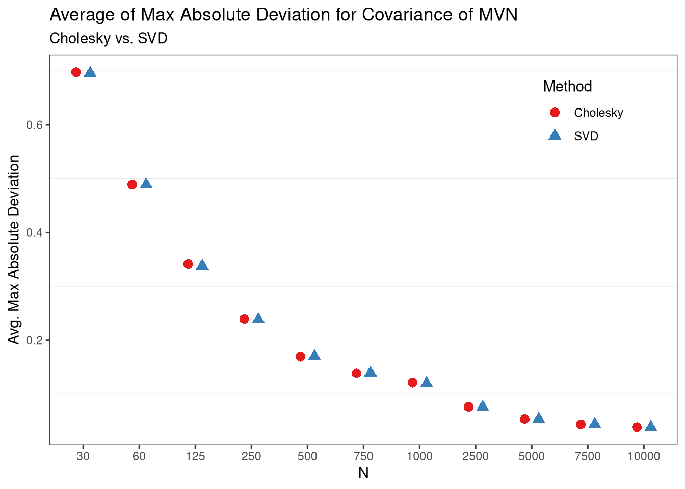
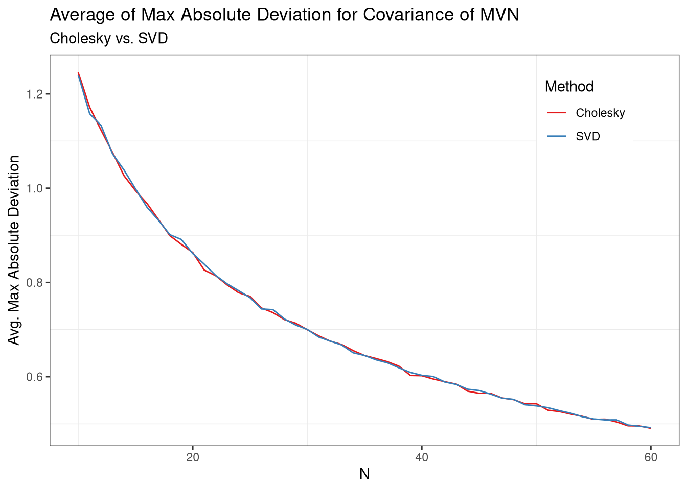

Note: If you are unable to view the math properly, e.g. you see a bunch of raw latex code, ensure that any browser extensions (ublock, privacy badger, etc) are not blocking access to mathjax.js, as this site requires mathjax to display correctly.
To take draws from the multivariate normal distribution, we leverage the fact that linear transformations of normal random variables are also normal. By taking a suitable decomposition of the desired covariance matrix, multiplying this decomposition by independent normal random vectors, and adding a constant, we can sample from any desired parameterization of the multivariate normal distribution. Some of what is presented here came as a result of taking Darren Homrighausen’s class on multivariate statistics. However, two additional references were consulted, and are available here and here.
In order to understand how to take draws from a multivariate normal distribution, it is first important to know that if \(X \sim \mathcal{N}(\mu, \sigma^2)\) and \(Y = cX + k\), then \(Y \sim \mathcal{N}(c\mu + k, c^2\sigma^2)\). In words, linear transformations of univariate normal random variables yield normal random variables with known location and scale parameters.
First, proving that the location and scale parameters are known in the univariate case is a straightforward application of the fact that expectations are a linear operator:
\[\begin{align} &\text{Let:} \nonumber \\ \nonumber \\ & \quad X \sim \mathcal{N}(\mu,\sigma^2) \nonumber \\[1ex] & \quad Y = cX + k \quad \text{for constants $c$ and $k$} \nonumber \\ \nonumber \\ &\text{Then:}\nonumber \\ \nonumber \\ &\quad \mathbb{E}(Y) = c\mathbb{E}(X) + k = c\mu + k \nonumber \\[1ex] &\quad \mathrm{Var}(Y) = c^2\mathrm{Var}(X) = c^2\sigma^2 \nonumber \end{align}\]
And second, to show that the resulting distribution is univariate normal, let \(F(\cdot)\) be the (normal) CDF of \(X\) and \(G(\cdot)\) be the CDF of \(Y\). Then the CDF of Y is:
\[\begin{align} G_Y(y) &= \Pr(Y \leq y) \nonumber \\[2ex] &= \Pr(cX + k \leq y) \nonumber \\[2ex] &= \Pr\left(X \leq \frac{y-k}{c}\right) \nonumber \\[2ex] &= F_X\left(\frac{y-k}{c}\right) \\[2ex] \end{align}\]
And differentiating to obtain the pdf of \(Y\): \[\begin{align} \implies g_Y(y) &= \dfrac{\partial}{\partial y} F_X\left(\frac{y-k}{c}\right) \nonumber \\[2ex] &= f_X\left(\frac{y-k}{c}\right)\frac{1}{c} \nonumber \\[2ex] \implies f_X\left(\frac{y-k}{c}\right)\frac{1}{c} &= \frac{1}{\sqrt{2\pi}c\sigma} e^{\dfrac{1}{2}\left(\cfrac{\dfrac{y-k}{c}-\mu}{\sigma}\right)^{\textstyle 2}} \nonumber \\[2ex] &=\frac{1}{\sqrt{2\pi}c\sigma} e^{\dfrac{1}{2}\left(\cfrac{\dfrac{(cx+k)-k}{c}-\mu}{\sigma}\right)^{\textstyle 2}}\nonumber \\[2ex] &=\frac{1}{\sqrt{2\pi}c\sigma} e^{\dfrac{\left[(cx+k)-(k+c\mu)\right]^2}{2c^2\sigma^2}} \label{pdf.y} \end{align}\]
Where \ref{pdf.y} is clearly a \(\mathcal{N}(c\mu+k, c^2\sigma^2)\) distribution, which concludes the proof.
\(\blacksquare\)
Thus, if we multiply \(X\) by the standard deviation that we desire our transformed variable to have, and then add on a constant, we arrive at any desired normally distributed random variable. Although this is somewhat trivial in the univariate case due to software implementations easily drawing from arbitrary univariate normals, this understanding proves useful when trying to draw from a multivariate normal distribution.
The next step is to extend the univariate case to the multivariate context by demonstrating that linear transformations of multivariate normal random vectors are also multivariate normal. First, let
\[\begin{align} \boldsymbol{X} &\sim \mathrm{MVN}(\boldsymbol{\mu}_x, \boldsymbol{\Sigma}_x) \nonumber \\[1ex] \boldsymbol{Y} &= \boldsymbol{CX} + \boldsymbol{k} \nonumber \end{align}\]
Then, it follows that \[\begin{align} \boldsymbol{Y} \sim \mathrm{MVN}(\boldsymbol{C\mu_x} + \boldsymbol{k}, \boldsymbol{ C\Sigma_x C^\top}) \label{mvres} \end{align}\]
where:
This proof calls directly on Taboga (2012, 447), which is also a great book for all things math-stat.
For proof, recall that the MGF of the MV normal distribution is \[M_X(t): \mathbb{R}^p \rightarrow \mathbb{R}= \mathbb{E}(e^{t^\top X}) = e^{t^\top \boldsymbol{\mu }+ \frac{1}{2}t^\top \boldsymbol{\Sigma }t}\] for \(t \in \mathbb{R}^p\).
Then for \(t \in \mathbb{R}^n\) (dropping bold for matrices and vectors), the joint MGF of \(Y\), \(M_Y(t): \mathbb{R}^n \rightarrow \mathbb{R}\), is:
\[\begin{align} M_Y(t) &= \mathbb{E}(e^{t^\top Y}) \nonumber \\[2ex] &= \mathbb{E}\left(e^{t^\top(CX + k)}\right) \nonumber \\[2ex] &= \mathbb{E}\left(e^{t^\top CX}e^{t^\top k}\right) \nonumber \\[2ex] &= e^{t^\top k}\mathbb{E}\left(e^{t^\top CX}\right) \nonumber \\[2ex] &= e^{t^\top k} M_X(tC) \nonumber \\[2ex] &= e^{t^\top k} e^{t^\top C \mu + \frac{1}{2}t^\top C \Sigma C^\top t} \nonumber \\[2ex] &= e^{ t^\top k + t^\top C \mu + \frac{1}{2}t^\top C \Sigma C^\top t} \nonumber \\[2ex] &= e^{t^\top (C \mu + k) + \frac{1}{2}t^\top C \Sigma C^\top t} \label{mgf} \end{align}\]
And, equation \ref{mgf} is clearly the MGF of a \(\mathrm{MVN}(\boldsymbol{C\mu + k}, \boldsymbol{C\Sigma C^\top})\) distribution, which by the MGF Uniqueness Theorem implies that \(Y\) has this distribution, which concludes the proof.
\(\blacksquare\)
Note: This exposition uses a bivariate normal, but readily extends to arbitrarily large dimensions.
In short, the steps to generate from any multivariate normal distribution are:
Decide on a desired covariance matrix, \(\boldsymbol{\Sigma}_y\)
Decide on a desired mean vector, \(\boldsymbol{\mu}_y = \boldsymbol{k}\)
Generate \(\boldsymbol{X}\) as independent standard normal \((0,1)\) random variables
Obtain the matrix square-root, \(\boldsymbol{C}\), of \(\boldsymbol{\Sigma}_y\) (so that \(\boldsymbol{CC}^\top = \boldsymbol{\Sigma}_y\))
Multiply \(\boldsymbol{CX}\) and add \(\boldsymbol{CX} + \boldsymbol{k}\)
Assuming we’ve done steps 1 and 2 already, in step 3 we now need to generate independent univariate standard normal random variables. To see why, recall from above that we have
\[\begin{align} \boldsymbol{X} &\sim \mathrm{MVN}(\boldsymbol{\mu}_x, \boldsymbol{\Sigma}_x) \nonumber \\[1ex] \boldsymbol{Y} &= \boldsymbol{CX} + \boldsymbol{k} \nonumber \\[1.5ex] \implies \boldsymbol{Y} &\sim \mathrm{MVN}(\boldsymbol{C\mu_x} + \boldsymbol{k}, \boldsymbol{ C\Sigma_x C^\top}) \end{align}\]
Interestingly, suppose we generate the observations on \(\boldsymbol{X}\) as i.i.d. standard normal random variables: \[\begin{align} \boldsymbol{\mu}_x &= (0,0) \nonumber \\[2ex] \boldsymbol{\Sigma}_x &= \begin{bmatrix} 1 & 0 \\ 0 & 1 \end{bmatrix} \nonumber \end{align}\]
Then it is true that \(\boldsymbol{\Sigma}_x = \boldsymbol{I}\). This result lends nicely to step 4 (find the matrix square-root of \(\boldsymbol{\Sigma}_y\)), because to obtain \(\boldsymbol{Y} \sim \mathrm{MVN}(\boldsymbol{\mu}_y, \boldsymbol{\Sigma}_y)\), we simply have to find a suitable matrix \(\boldsymbol{C}\) such that multiplying \(\boldsymbol{CX}\) yields\[\mathrm{Cov}(\boldsymbol{Y}) = \mathrm{Cov}(\boldsymbol{CX}) = \boldsymbol{C\Sigma}_x \boldsymbol{C}^\top = \boldsymbol{CIC}^\top = \boldsymbol{CC}^\top\] as already proven. In order to arrive at this matrix of constants, note that the square-root of a matrix, \(\boldsymbol{A}\), is any matrix, \(\boldsymbol{B}\), such that \(\boldsymbol{BB}^\top = \boldsymbol{A}\).1 This implies that the matrix of constants, \(\boldsymbol{C}\), in \(\boldsymbol{CX}\) is in fact the matrix square-root of \(\boldsymbol{\Sigma}_y\), directly analogous to the univariate case in which we multiplied \(X\sigma_y\). Thus, by generating i.i.d. standard normal variables in step 3, we then deduce that \(\boldsymbol{C}\) must be the matrix square-root of \(\boldsymbol{\Sigma}_y\) in order to get the desired structure for \(\boldsymbol{Y}\). In step 5, we can finally add on a vector of constants, \(\boldsymbol{k} = \boldsymbol{\mu}_y\), to get the desired mean vector for \(\boldsymbol{Y}\), because \(\boldsymbol{\mu}_x = \boldsymbol{0}\).
To find the matrix square-root of \(\boldsymbol{\Sigma}_y\), two factorizations of \(\boldsymbol{\Sigma}_y = \boldsymbol{CC^\top}\) immediately come to mind, although several others can also work:
Cholesky decomposition – \(\boldsymbol{LL}^\top\) where \(\boldsymbol{L}\) is lower-triangular. This is unique for positive definite matrices, which all valid covariance matrices are.
Singular values decomposition (SVD) – \(\boldsymbol{UDV}^\top\), where \(\boldsymbol{U}\) and \(\boldsymbol{V}\) are orthogonal matrices whose columns are the left and right singular vectors, respectively, and \(\boldsymbol{D}\) is a diagonal matrix containing the singular values. Because of the orthogonal and diagonal matrices, this is geometrically a rotation, elongation, and rotation. Note that for real, symmetric, positive-definite matrices, this is identical to the spectral decomposition.2
To obtain the matrix square-root, \(\boldsymbol{C}\), via the Cholesky decomposition decompose \(\boldsymbol{\Sigma}_y\) as \[\boldsymbol{\Sigma}_y = \boldsymbol{LL}^\top\] and multiply \[\boldsymbol{Y} = \boldsymbol{LX}\] which yields \[\boldsymbol{Y} \sim (\boldsymbol{0}, \boldsymbol{LL^\top})\] which has exactly the covariance structure that we wanted, as \(\boldsymbol{L}\) is equivalent to the matrix \(\boldsymbol{C}\) that we were looking for.
Suppose we take the SVD of a symmetric matrix \(A\). Then the left singluar vectors, \(U\), are the eigenvectors of \(AA^\top\), while the right singular vectors, \(V\), are the eigenvectors of \(A^\top A\) (see this link for proof). However, since \(A\) is symmetric, \[A = A^\top \implies AA^\top = A^\top A \implies U = V\]
\(\blacksquare\)
Finally, pre-multiplying the univariate normals in \(X\) by the matrix square-root, \(\boldsymbol{C}\), of \(\boldsymbol{\Sigma}_y\) yields (dropping bolding)
\[\begin{align} Y= CX &= UD^{1/2} X \nonumber \\[1ex] \implies Y &\sim \left(\boldsymbol{0}, UD^{1/2}\Sigma_x (UD^{1/2})^\top \right) \nonumber \\[1ex] & \sim \left(\boldsymbol{0}, UD^{1/2} I (UD^{1/2})^\top \right) \nonumber \\[1ex] & \sim \left(\boldsymbol{0}, UD^{1/2}D^{1/2}U^\top\right) \nonumber \\[1ex] & \sim \left(\boldsymbol{0} , UDU^\top\right) \nonumber \\[1ex] & \sim \left(\boldsymbol{0} , \Sigma_y\right) \nonumber \\[1ex] \end{align}\]
So to obtain the desired covariance \(\boldsymbol{\Sigma}_y\) from \(X\) we simply set \(\boldsymbol{C} = \boldsymbol{UD}^{1/2}\) and premultiply \(\boldsymbol{CX}\).3
To do this in R, we follow the steps outlined previously. Thus, we first decide on the desired mean vector, \(\boldsymbol{\mu}_y\), and covariance matrix, \(\boldsymbol{\Sigma}_y\). Recall also that a valid, full-rank covariance matrix is positive-definite.4
mu.y = c(-.246, -1.3, 1.645)
sigma.y = matrix(c(2, .66, -1.2,
.66, .75, -.75,
-1.2, -.75, 2.5),
nrow = 3, byrow=T)
#desired cov
sigma.y## [,1] [,2] [,3]
## [1,] 2.00 0.66 -1.20
## [2,] 0.66 0.75 -0.75
## [3,] -1.20 -0.75 2.50#check pos def
all(eigen(sigma.y)$values > 0)## [1] TRUE
Second, we’ll simulate some i.i.d. multivariate standard normal data in 3 dimensions.
#simulate trivariate iid standard normal
n = 10000
x = matrix(rnorm(n*3), nrow=3)
And then finally we take the Cholesky and SVD of the desired covariance, multiply \(\boldsymbol{X}\) by the appropriate matrix \(\boldsymbol{C}\), and then add on the constant to get the desired mean.
#Via cholesky
chol.sig.y = chol.default(sigma.y)
y.chol = t(chol.sig.y) %*% x # R returns the upper-triangular, L^t by default
#Via svd
svd.sig.y = svd(sigma.y)
u = svd.sig.y$u
d = svd.sig.y$d
sqrt.sig = u%*%diag(d)^(1/2)
y.svd = sqrt.sig %*% x
# add on mean
#(transpose for taking the covariance of a matrix in R on next lines)
y.svd = t(y.svd + mu.y)
y.chol = t(y.chol + mu.y)
# results
list(chol = list(mean=apply(y.chol, 2, mean),
cov=cov(y.chol)),
svd = list(mean=apply(y.svd, 2, mean),
cov=cov(y.svd)),
desired_cov = sigma.y,
desired_mean = mu.y)## $chol
## $chol$mean
## [1] -0.2486621 -1.3062175 1.6456811
##
## $chol$cov
## [,1] [,2] [,3]
## [1,] 1.9967534 0.6670104 -1.1774324
## [2,] 0.6670104 0.7474750 -0.7282327
## [3,] -1.1774324 -0.7282327 2.4383260
##
##
## $svd
## $svd$mean
## [1] -0.2488531 -1.3014936 1.6370299
##
## $svd$cov
## [,1] [,2] [,3]
## [1,] 1.976689 0.6528620 -1.2072767
## [2,] 0.652862 0.7355421 -0.7339955
## [3,] -1.207277 -0.7339955 2.5134166
##
##
## $desired_cov
## [,1] [,2] [,3]
## [1,] 2.00 0.66 -1.20
## [2,] 0.66 0.75 -0.75
## [3,] -1.20 -0.75 2.50
##
## $desired_mean
## [1] -0.246 -1.300 1.645
From the above output, it is clear that the desired covariance
structure is achieved. So we can finally write our own little function
that generates multivariate normal samples! In fact, the function below
is virtually indistinguishable from the source-code for the
MASS package’s mvrnorm function.
my.mvrnorm = function(sigma.y, mu.y = rep(0, ncol(sigma.y)), n, method="svd"){
method = match.arg(method, choices = c("svd", "cholesky"))
pdef = all(eigen(sigma.y)$values > 0)
if(!pdef) stop("Desired covariance not positive definite.")
if(!isSymmetric(sigma.y)) stop("Covariance is not symmetric.")
if(ncol(sigma.y) != length(mu.y)) stop("Dimensions of mean and covariance inconsistent.")
x = matrix(rnorm(n*length(mu.y)), nrow = length(mu.y))
if(method == "svd"){
svd.sig = svd(sigma.y)
y = svd.sig$u %*% diag(svd.sig$d^(1/2)) %*% x + mu.y
return(t(y))
} else {
chol.sig = t(chol.default(sigma.y))
y = chol.sig %*% x + mu.y
return(t(y))
}
}
We’ve learned that two factorizations work, but which one is “better,” numerically? This may depend on how we define “better,” but lets try and find out. First, for simplicity we will only look at the accuracy of the covariance. Second, lets say that a factorization is better if it minimizes \(max_{ij} |Cov(x_{i}, x_{j}) - D_{ij}|\) where \(D_{ij}\) is each element of the desired covariance matrix. That is, which method minimizes the maximum absolute deviation from the desired covariance structure.
Taking this objective in mind, we can explore this by the monte carlo method. We’ll first define a function that returns the value of the objective, as well as the sample size, and decomposition used, and then compare the loss after several iterations for each sample size.
mv.loss = function(n, sigma.y){
n = n
x = matrix(rnorm(n*3), nrow=3)
# chol
chol.sig.y = chol.default(sigma.y)
y.chol = t(chol.sig.y) %*% x
loss.chol = max( abs( cov(t(y.chol)) - sigma.y) )
# Via svd
svd.sig.y = svd(sigma.y)
u = svd.sig.y$u
d = svd.sig.y$d
sig.sqrt = u%*%diag(d)^(1/2)
y.svd = sig.sqrt %*% x
loss.svd = max( abs( cov(t(y.svd)) - sigma.y) )
return(c(chol = loss.chol, svd = loss.svd, n=n))
}
And lets make sure its working as expected, using the desired covariance previously defined:
mv.loss(n = 100, sigma.y = sigma.y)## chol svd n
## 0.5096003 0.3819846 100.0000000
And finally, now that we know the function works, we can do several iterations at each sample size to see which method converges fastest.
RhpcBLASctl::blas_set_num_threads(1)
RhpcBLASctl::omp_set_num_threads(1)
# get things ready for parallel run, plotting
pks = c("parallel", "dplyr", "ggplot2", "reshape2")
invisible(sapply(pks, library, character.only=T))
RNGkind("L'Ecuyer-CMRG") # for parallel reproducibility
set.seed(167492)
#Grid of sample sizes
niter = 10000
n = c(30, 60, 125, 250, 500, 750, 1000, 2500, 5000, 7500, 10000)
n.grid = rep(n, each = niter)
# run sims, summarize, plot
res = mclapply(n.grid, mv.loss, sigma.y=sigma.y,
mc.preschedule=T,
mc.cores = (parallel::detectCores()-1))
dat = as.data.frame(do.call(rbind, res))
summaries = dat %>%
group_by(n) %>%
summarise(mean.chol = mean(chol),
mean.svd = mean(svd))
summaries = melt(summaries,
id.vars="n",
measure.vars = c("mean.chol",
"mean.svd"))
summaries$n = as.factor(summaries$n)
ggplot(data=summaries, aes(x=n)) +
geom_point(aes(y = value, color=variable, shape=variable),
position=position_dodge(width=.5),
size=3) +
theme_bw() +
scale_color_brewer(palette = "Set1",
labels = c("Cholesky", "SVD")) +
scale_shape_discrete(labels=c("Cholesky", "SVD")) +
labs(title="Average of Max Absolute Deviation for Covariance of MVN",
subtitle = "Cholesky vs. SVD",
x= "N",
y= "Avg. Max Absolute Deviation",
color = "Method",
shape = "Method") +
theme(panel.grid.major = element_blank(),
legend.position = c(.85,.85)) 
From these results, it appears as though the two perform roughly the same in terms of max absolute deviations from the desired covariance structure, on average. However, it looks like they may be slightly different in small samples, so lets take a look to be sure.

Lastly, then, the two approaches are equal on average, even in small samples.
This is an alternative definition of the matrix square-root. More often, it is defined as \(A=BB\) instead of \(A=BB^\top\)↩︎
One of the advantages of the SVD then is that it nests the well-known spectral decomposition, while always existing. In other words, there are no restrictions on the existence of the SVD, unlike the spectral decomposition. Moreover, the SVD tends to be more numerically stable, at the cost of relative inefficiency.↩︎
We could also use \(\boldsymbol{UD^{1/2}U^\top}\) as the matrix square-root, although this requires more computations.↩︎
An interesting way to understand why (other than mathematical necessity) is that the correlation between some of the variables would be \(\geq 1\) or \(\leq -1\) if this did not hold, suggesting either an invalid correlation, or perfectly colinear variables.↩︎